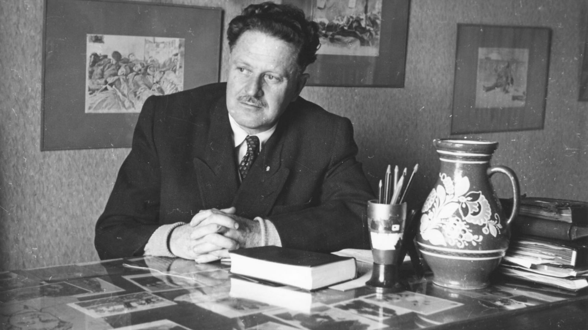
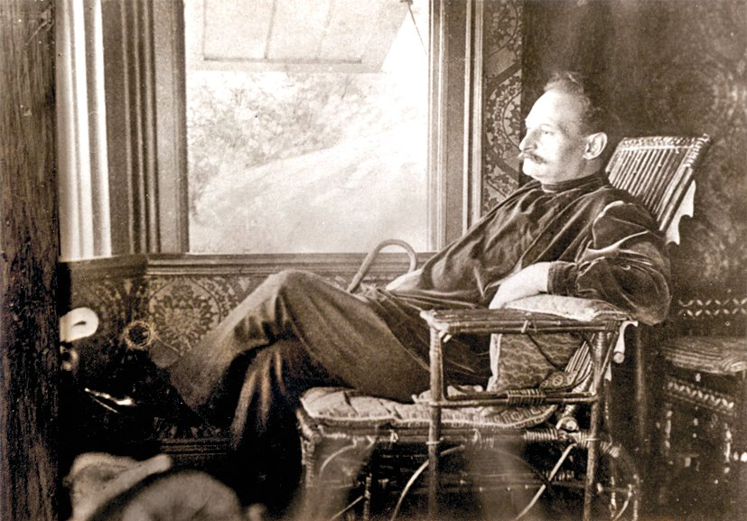
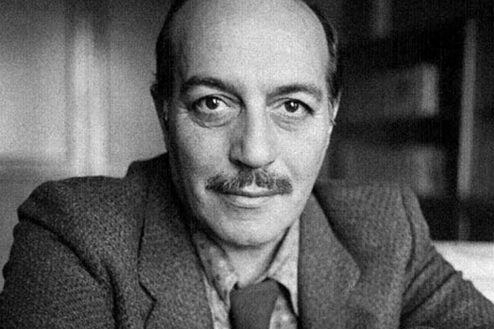
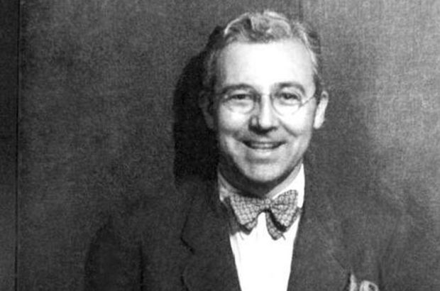
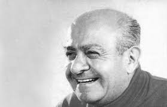
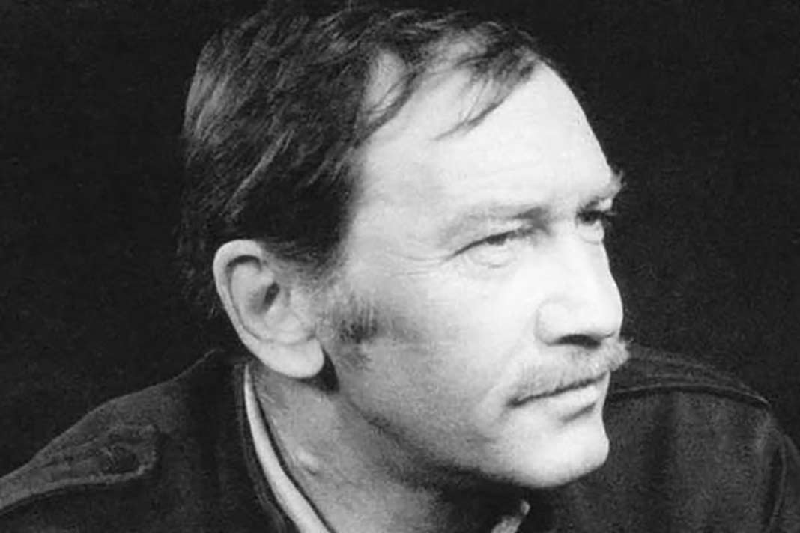

Nazım Hikmet

Nâzım Hikmet Ran (15 Ocak 1902 – 3 Haziran 1963), daha çok Nâzım
Hikmet olarak bilinen Türk şair, oyun yazarı, romancı, anı yazarı.
Şiirleri elliden fazla dile çevrilmiş ve eserleri birçok ödül
almıştır. Türkiye'de serbest nazımın ilk uygulayıcısı ve çağdaş Türk
şiirinin en önemli isimlerindendir. Uluslararası bir üne ulaşmıştır ve
dünyada 20. yüzyılın en gözde şairleri arasında gösterilmektedir.
Eserlerinden örnekler için tıklayınız
Tevfik Fikret

Tevfik Fikret (Osmanlıca: توفیق فکرت; 24 Aralık 1867, İstanbul - 19
Ağustos 1915, İstanbul). Osmanlı İmparatorluğu'nun dağılma sürecinde
Servet-i Fünûn topluluğunun lideri olan Tevfik Fikret, devrimci ve
idealist fikirleriyle Mustafa Kemal başta olmak üzere dönemin pek çok
aydınını etkiledi. Türk edebiyatının Batılılaşmasında öne çıkan
isimlerden birisi oldu. Farsçada "kuş yuvası" anlamına gelen Aşiyan
ismini verdiği semt, yaşamının son yıllarını geçirdiği ve eserlerini
kaleme aldığı yerdir.
Eserlerinden örnekler için tıklayınız
Cemal Süreya

Cemal Süreya, kimlik adıyla Cemalettin Seber (1931, Erzincan - 9 Ocak
1990, İstanbul). Türk şiirinde modernist bir hareket olan İkinci Yeni
şiirinin öncü şairlerinden biridir. İlk şiir denemelerini ortaokulda
eskizlerle, lisede aruzla yapsa da asıl şiir çalışmaları üniversite
yıllarında başlamıştır. Üvercinka (1958), Göçebe (1965), Beni Öp Sonra
Doğur Beni (1973), Uçurumda Açan (1984), Sıcak Nal (1988), Güz Bitigi
(1988) ve Sevda Sözleri (1990)[not 2] adlarındaki şiir kitaplarının
yanı sıra deneme, eleştiri, günlük ve antoloji türlerinde de
yazmıştır.
Eserlerinden örnekler için tıklayınız
Sabahattin Ali

Sabahattin Ali (25 Şubat 1907; Eğridere, Edirne Vilâyeti - 2 Nisan
1948, Kırklareli). Edebî kişiliğini toplumcu gerçekçi bir düzleme
oturtarak yaşamındaki deneyimlerini okuyucusuna yansıttı ve
kendisinden sonraki Cumhuriyet dönemi Türk edebiyatını etkileyen bir
figür hâline geldi. Daha çok öykü türünde eserler verse de
romanlarıyla ön plana çıktı; romanlarında uzun tasvirlerle ele aldığı
sevgi ve aşk temasını, zaman zaman siyasi tartışmalarına gönderme
yapan anlatılarla zaman zaman da toplumsal aksaklıklara yönelttiği
eleştirilerle destekledi.
Eserlerinden örnekler için tıklayınız
Ahmed Arif

Ahmed Arif (23 Nisan 1923,Diyarbakır - 2 Haziran 1991, Ankara). Türk
edebiyatının çok sevilerek yaygın üne kavuşmuş bir şairidir. Hayatta
iken yayımladığı tek kitabı olan Hasretinden Prangalar Eskittim
(1968), Türkiye'nin en çok basılan şiir kitaplarındandır. Şiirlerini
samimi bir anlatımla, alışılmamış bağdaştırmalarla, serbest ölçüyle
yazdı. Doğup büyüdüğü Güneydoğu Anadolu coğrafyası ve Çukurova'ya
şiirlerinde önemli bir yer verdi.
Eserlerinden örnekler için tıklayınız
Turgut Uyar

Ahmet Turgut Uyar[1] (4 Ağustos 1927, Ankara - 22 Ağustos 1985,
İstanbul). Uyar'ın dil, tema, imge, anlatım biçimi, biçim/öz ilişkisi
açısından büyük bir değişimi gerçekleştirdiği ilk İkinci Yeni kitabı
olan Dünyanın En Güzel Arabistanı, 1959'da yayımlanmıştır. 1962'de
Tütünler Islak'ı; 1968'de Her Pazartesi'yi; 1970'te Divan'ı; 1974'te
Toplandılar'ı; 1982'de Kayayı Delen İncir'i yayımlamıştır. 1981
yılında Toplu Şiirler adıyla o güne kadar yayımladığı eserleri ilk
kez; 1984'te Büyük Saat adıyla ikinci kez toplu olarak basılmıştır.
Eserlerinden örnekler için tıklayınız